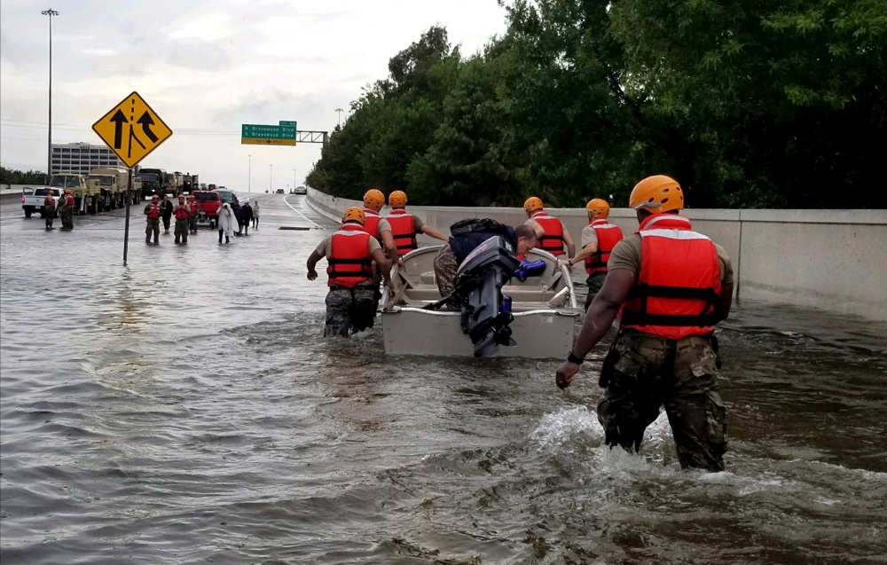

Hurricane Harvey Victims and Rescuers Find Each Other In Real Time with Free Location App
“This app turns rescue boats into
something like an Uber taxi.”
Rob Gould, Gatha CEO
Think of it like Uber which connects people for car rides, today it’s being used to connect people trapped by the floodwaters of Hurricane Harvey with the help they need to get safe.
Gatha is completely free. There are no in-app purchases.

12 Soldiers with the Texas Army National Guard move through flooded Houston streets as floodwaters from Hurricane Harvey continue to rise, Monday, August 28, 2017. More than 12,000 members of the Texas National Guard have been called out to support local authorities in response to the storm. (Courtesy Photo National Guard Bureau U.S. Army photo by 1st Lt. Zachary West)